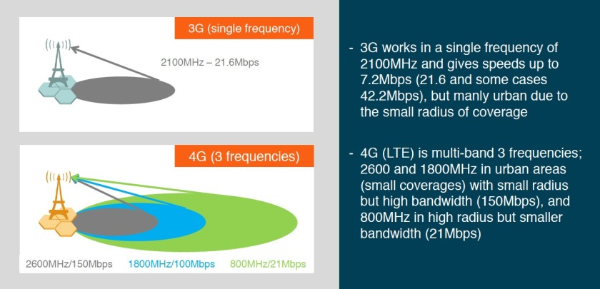

In your Android smartphone, the strength of mobile Internet signal is shown using alphabet letters like G, E, 2G, 3G, H and 4G near the signal bar. These symbols are visible right next to the signal strength indicator. Have you ever wondered about the meaning of these symbols / letters?
Meaning of G in Mobile Signal
Letter G stands for GPRS (General Packet Radio Service).
GPRS is considered to be the second generation (2G) mobile technology. It is the slowest and oldest among all mobile technologies. It is mainly good enough for sending text messages using apps like WhatsApp. Data rates in GPRS are between 56 and 114 kbit/second.
Meaning of E in Mobile Signal
Letter E stands for EDGE (Enhanced Data Rates for GSM Evolution). It is also called Enhanced GPRS. This technology lies somewhere in between 2G and 3G technology. So, some people refer to it as 2.5G.

EDGE is faster than GPRS but still not good enough to browse the Internet.Typically EDGE provides a data rate of 400 kbit/second but in ideal conditions data rate of upto 1 Mbit/second can also be achieved.
This technology also lies somewhere in between 2G and 3G. Those who call GPRS as 2.5G, they refer EDGE as 2.75G.
Meaning of 3G in Mobile Signal
3G means the third generation of mobile telephone technology. It uses the Universal Mobile Telecommunications System and is based on GSM standards.
Typically 3G provides data transfer rates 384 kbit/second. But depending upon how it is implemented in various networks, the data rate can go upto 42 Mbits/second.
Usually 3G is faster than EDGE and you can easily browse websites and stream music.
Meaning of H in Mobile Signal
H stands for HSPA (High Speed Packet Access). It is an enhanced form of 3G technology. HSPA provides higher data transfer rates than the basic 3G.
Note: In the above comparison chart, all the data speeds are given in terms of bits (e.g. kilobits, megabits etc.) In order to get the speed in terms of bytes (e.g. kilobytes, megabytes etc.) you would need to divide the shown figures by 8. One byte = 8 bits.
HSPA can provide peak data rates of up to 14 Mbit/s for downlink and 5.76 Mbit/s for uplink.
High-Speed Downlink Packet Access (HSDPA) is a further enhanced version of HSPA. HSDPA supports download speed of up to 99.3 Mbit/s. When you see letter H near the signal bar in your mobile phone, you can stream music and even YouTube videos without much interruption.
Meaning of H+ in Mobile Signal
This is enhanced HSPA. It is faster than basic HSPA (as explained above). Relatively speedier data transfer in H+ will make your video to download or stream much more smoothly.
At present, 4G technology is not very widely available. So, in most parts of the world, HSPA+ is the fastest speed you can get through mobile Internet.
Meaning of 4G in Mobile Signal
4G is the fourth generation of mobile technology. It is also called LTE (Long Term Evolution). 4G connection works as good as a wi-fi connection of your home or office.
LTE uses two different radio links for downlink and uplink — from tower to device and vice versa. For the downlink, LTE uses an OFDMA (orthogonal frequency division multiple access), which requires MIMO. MIMO, which stands for Multiple Input, Multiple Output, uses two or more antennas to reduce latency significantly and boost speeds within a given channel.
Meaning of 5G in Mobile Signal
5G is the 5th generation mobile network. It will take a much larger role than previous generations. 5G is also OFDM-based and will operate based on the same mobile networking principles.
5G is expected to deliver peak data rates up to 20 Gbps. 5G also support new services such as mission-critical communications and the massive IoT. 5G will also natively support all spectrum types
Evolution of Mobile Internet with Architecture
1G Architecture

- Designed for voice communication.
- One example is Advanced Mobile Phone System (AMPS) used in North America.
- AMPS is an analog cellular phone system.
- The band between 824 to 849 MHz is used for reverse communication from MS to BS.
- The band between 869 to 894 MHz is used for forward communication from BS to MS.
- AMPS uses Frequency Division Multiple Access (FDMA) to divide each 25-MHz band into 30-KHz channels.
2G & 3G Architecture
- 2G GSM
- GSM stands for Global System for Mobile Communications.
- Data rate up to 9.6 Kbps.
- GSM 900 (GSM) - the most common in Europe and the world.
- GSM 1900 (PCS-1900, DCS-1900) - only frequency used in North America for GSM.
- GSM 1800 (PCN, DCS-1800) - rapidly increasing number of countries including France, Germany, Switzerland, the UK, and Russia.
- GSM 2G Architecture
- 2.5G Cellular GPRS
- 2.5 G wireless cellular networks have been developed as a transition path to 3G.
- Example - GPRS.
- Offer circuit-switched data services at 9.6 Kbps.
- GPRS supports both IP and X.25 networking.
- GPRS network is the GSN (GPRS Support Node) that receives the packet data and transfers it to the Internet or other GPRS networks.
- GPRS 2.5G Architecture
- 2.75 Cellular EDGE
- 2.75G wireless cellular networks have been developed as an enhanced data rates for GSM and GPRS evolution.
- Example - EDGE.
- EDGE has been designed to address some of the limitations of GPRS.
- Maximum data rates up to 384 Kbps.
- 3G UMTS
- UMTS is Universal Mobile Telecommunication System.
- UMTS, the 3G successor to GSM which utilizes the W-CDMA air interface and GSM infrastructures.
- UMTS provides a consistent service environment even when roaming via “Virtual Home Environment” (VHE).
- There are two types of UMTS systems:
- Frequency Division Duplex (FDD) Wideband Code Division Multiple Access (FDD/WCDMA)
- Time Division Duplex (TDD) Wideband Code Division Multiple Access (TDD/WCDMA)
- UMTS combines the W-CDMA, TD-CDMA, or TD-SCDMA air interfaces, GSM Mobile Application Part (MAP) core, and the GSM family of speech codes.
- UMTS 3G Architecture

4G Architecture

- Optimized for data services, up to 1Gpbs.
- New packet-switched air interfaces, reducing latency, use OFDM, MIMO.
- Support cell sizes varying from 10s m.
- Simplified radia access networks (e-UTRANs) and packet switched core networks.
- Support for inter-operation and co-existence with (all) legacy systems
- 4G Architecture
Credits: Organization One: Author One and Author Two / Organization Two: Author Three and Author Four